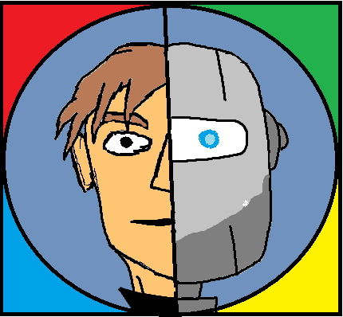

Tagok:Fehér Szabolcs, Kiss Zsolt
Mesterséges
Intelligencia
Kezdőlap
Mi az AI?
Riport
Deep Learning
Elérhetőségek
Mi az "AI"?
Mesterséges intelligenciának (MI vagy AI – az angol artificial intelligence-ből) egy gép, program vagy mesterségesen létrehozott tudat által megnyilvánuló intelligenciát nevezzük. A fogalmat legtöbbször a számítógépekkel társítjuk.
